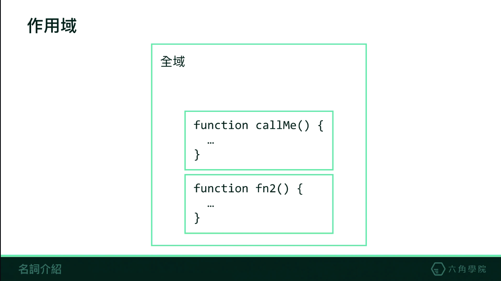

JavaScript 基礎介紹
JavaScript設計是一種直譯式(Interpreted language)、物件導向(Object-based)的程式語言。
編譯式語言 & 直譯式語言
我們寫的原始碼是無法直接被電腦或是瀏覽器閱讀的，在被電腦運行之前須經過“解譯”成電腦看得懂的代碼。
而其中又可分為編譯式語言&直譯式語言。
編譯式語言：編譯式語言編寫完原始碼後會經由編譯器編譯，並在預先編譯過程中除錯，確定無錯誤後再將代碼生成並於執行環境中運行。
Example：C、C++、bjective-C、Visual Basic等等。
直譯式語言：直譯式語言編寫完原始碼後會經由直譯器編譯，並直接將代碼生成並於執行環境中運行。
錯誤直接反映在環境中，像是 console 出現錯誤紅字。
Example：JavaScript、Python、Ruby等等。
JavaScript 是如何運行的

JavaScript是直譯式語言的一種，直譯語言在執行時會一行一行的動態將程式碼直譯(interpret)為機器碼，並執行。
以下是JavaScript經過直譯器轉換的過程。
1. 語法基本單元化(Tokenizing)。
將一串字元拆解成(對該語言)有意義的組塊，這些組塊就叫做語法基本單元化。
2. 組成抽象語法樹AST（Abstract Syntax Tree）。
將token流轉化為一個有元素層級巢狀所組成的代表程式語法結構的樹，這個樹被叫做抽象語法樹AST。
3. 代碼生成。
可透過編譯網站來了解語法單元化(Tokenizing)。
編譯網站
執行的錯誤情境 LHS, RHS
此錯誤與取值與賦予值有相當的關係。
- RHS：將值從右側的變數中取出，當無法取值時，會丟出’ReferrenceError’的錯誤訊息。
- LHS：將值賦予至左側的變數，如果左側不為’identifier’ or 無法被賦予時，會丟出’Invalid left-hand side’的錯誤訊息。
如有出現錯誤需立即修正，否則錯誤後方的程式碼會無法運行。
語法作用域(Lexical scope)
作用域分為靜態作用域以及動態作用域，不同的程式語言可能有不同的作用域，而同一語言內也可能存在多種作用域。
靜態作用域 ：在原始碼寫好的時候，作用域就已經被訂下來了，且不會再被改變。
動態作用域 ：在函式調用時才決定作用域。
JS採用靜態作用域(又稱語法作用域)。
在JS的作用域中

JS的作用域為一層一層向內，最外層有一全域，再向內包覆Function的作用域，Function的作用域是獨立的。
如Function的作用域內需要調用變數，但此作用域內無此變數時，會向外查找變數，
查找到便會調用此變數，
但如果查找不到此變數時就會出現錯誤 ReferenceError: 變數 is not defined。
EX:以下這段程式碼，會印出什麼結果呢？
1 | var value = 1 ; |
首先，我們宣告了一個變數value, 他是一個全域變數。接著宣告兩個函式，最後執行fn2。
執行fn2時，我們把變數value賦予了另外一個值2，接著執行fn1。fn1因為要印出value，因此向外查找value這個變數，在全域中找到value，值等於1。最後console.log的結果會是1。
JS為語法作用域，console.log的結果會是1。
但如果是動態作用域的話，結果就不一樣了。在執行到console.log(value)時，他會向上一層調用的函式來查找value的值，因此找到值等於2。